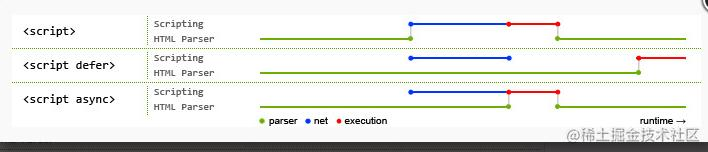

script 标签的 defer 与 async

普通 script 标签
JS 可能会修改 HTML 和 CSS，因此 JS 的下载执行过程不能和 HTML/CSS 并行
代码执行过程：
HTML解析过程中若碰到外联的JS会暂时中止HTML的解析流程- 等待脚本下载和解析完成后再继续进行之前中断掉的
HTML解析流程
因此，script 标签外联 JS 加载有这样的缺点：
- 会影响整个页面效率，一旦网速不好整个网站将等待
JS加载而不进行后续渲染 - 由于中断了
HTML解析流程，所以会导致页面空白等，影响体验
早前，常用的写法是将
script标签写在body最后面，等DOM全部解析完成后才加载JS，但HTML5标准有另一套异步加载JS的方法（defer/async）
defer
在 script 标签的行间写一个 defer=“defer” 或直接写 defer 就可让这个 script 外联的 JS 变成异步加载
代码执行过程：
HTML解析流程中若碰到外联JS时会开辟新线程来下载脚本，下载完成后不会立即解析，因此不会阻塞HTML的解析流程- 等到
HTML解析完毕后（不包括下载完里面的资源），DOMContentLoaded事件调用前再进行相应脚本的执行解析 - 注意：
DOMContentLoaded事件会等待defer的脚本执行完后才触发
注意：
- 这种方式可同时在
script闭合标签间写代码- 该方法只有
IE和一些高版本的firefox和chrome可以用IE6和IE7的异步加载最多只能有2个，超过两个时必须等前两个加载完才会加载第三个- 所有
defer的JS代码都保证按照顺序执行
async
async 是 asynchronous 的缩写，是 HTML5 标准
代码执行过程：
HTML解析流程中若碰到外联JS时会开辟新线程来下载脚本，下载完成后立即解析执行，且解析流程会中断HTML解析流程- 等到脚本执行完成后才会继续进行之前中断掉的
HTML解析流程
注意：
- 这种方法除了
IE6 ～ IE8其他的浏览器都好用- 该方式不能把代码写在
script闭合标签里，只能引用外部脚本（虽然标准是这么写的，但现在随着内核升级，async的script标签里也可写代码，在没有src情况下）async的JS代码不能保证是顺序执行的，而是按照race的方式哪个脚本先下载完就先解析哪个脚本
总结
defer 和 async 这两个属性不能一起使用，若同时使用 async 和 defer 属性，defer 不起作用，浏览器行为由 async 属性决定
兼容性写法
暴力写法：直接写两个 script 标签，一个采用 defer 一个采用 async。这种方法的缺陷：
IE高版本会加载两遍从而引起冲突- 但有些浏览器两个都没有从而一个都加载不出来
优化写法：通过动态添加 script 标签，W3C 的标准规定动态添加的 script 标签是异步的
这里 src 部分的下载是异步的，不会阻塞后面代码的执行，即可一边把 script 插入到 DOM 中一边下载资源
1 | // 需要注意的是 readyState 的 if-else 一定要写在 script.src = url 和 appendChild 之前 |
本博客所有文章除特别声明外，均采用 CC BY-NC-SA 4.0 许可协议。转载请注明来源 Donna'Log！